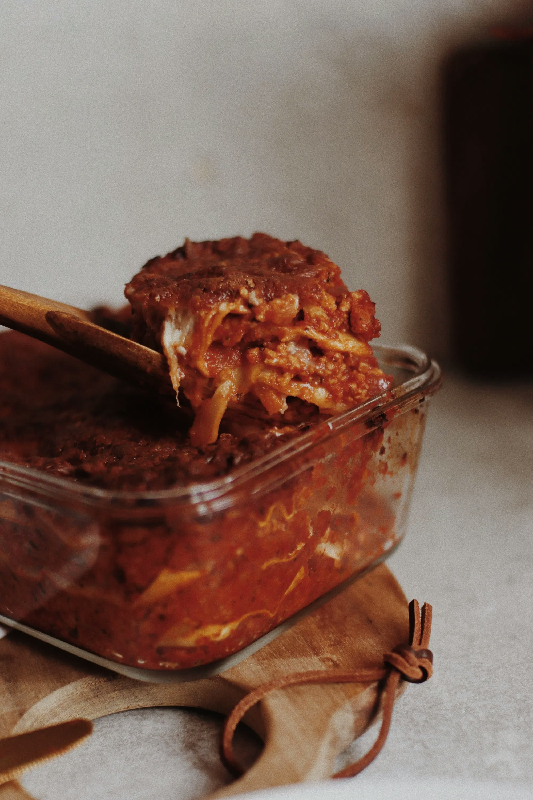

Mexican Lasagna

Description
This is a classic! Mexican lasagna is a great meal for any family table. For this recipe, we use turkey, which could make for an interesting Thanksgiving meal as well!
It's also a quick recipe, and all of this (possibly including the oven cooking) should be able to be done in under 45 minutes for most people.
Ingredients
- 1 Red Bell Pepper
- 1 Orange Bell Pepper
- 1 Med. Onion
- 1 Pound Ground Turkey
- 1/4 Cup Southwest Seasoning
- Shredded Cheese (6 Containers)
- Refried Beans (2 red)
- Diced Chiles (2 small cans)
- 2 tsp EV olive oil
- 12 Corn Tortillas
Steps
- Dice peppers and onions.
- Heat olive oil in large skillet. Add diced peppers and onions. Cook until tender.
- Remove from skillet and set aside.
- Brown meat in skillet until almost done.
- Add chiles and finish cooking.
- Add onions and peppers to meat along with seasoning and 1/4 cup of water.
- Simmer for 10 minutes.
- Line greased 9x13 pan with 6 tortillas.
- Spread with 1 red container of refried beans. Spread half of your meat mixture over the beans.
Layer remaining tortillas. Repeat spread with other half of beans and meat mixture.
- Sprinkle 6 blue containers of cheese on top.
- Bake at 375 degrees for 30 minutes.
Back to Home